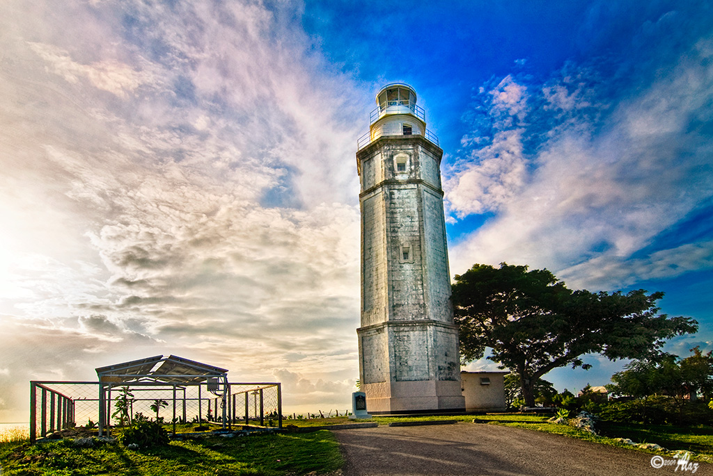

YOUR NEXT CEBU DISCOVERY
A little closer
to something
beautiful.
Salt in the air. Stories in the streets.
Welcome to Liloan, the
light of the north.
A coastal town. A thousand little discoveries.
CEBU, PHILIPPINES ↗SLOW DOWN. LOOK AROUND.
Some places you visit.
Others, you feel.
There’s a different rhythm here. In the shade of the lighthouse, along the green hills, and over a bag of freshly baked rosquillos, Liloan invites you to take your time.
Come with a little curiosity. Leave with a story that feels like your own.
Get to know our town ↗LET YOUR CURIOSITY LEAD
Find your kind of escape.


 A little sweetness, a lot of tradition.
A little sweetness, a lot of tradition.
THE FLAVOR OF HOME
Good stories
start with
something sweet.
Break a rosquillo. Share some masi. Get to know Liloan through the local treats and family traditions that make every bite feel like a warm welcome.
Taste your way around ↗FEEL THE SPIRIT OF THE TOWN
Life here has color.

CULTURE, COMMUNITY & CELEBRATION
Come for the sights.
Stay for the spirit.
Discover Liloan’s traditions ↗
MAKE A DAY OF IT
A little inspiration.
Your own adventure.
Start with the places that speak to you.
Save your favorites as
you explore.
Begin with a story.
Find a moment of quiet in the town’s heritage.
Explore the church ↗02 / TASTEFollow the sweet things.
Make space for local flavors and a little pasalubong.
Discover Titay’s ↗03 / LINGERLeave time for the view.
End your wander with the lighthouse on the horizon.
Meet the Parola ↗YOUR LITTLE LILOAN LIST
Places you’d love to see
Tap “Save this place” on any destination to start your list.
Keep your plans flexible. Check current opening hours, access, and arrangements directly with each destination before setting out.
Find Liloan on the map ↗